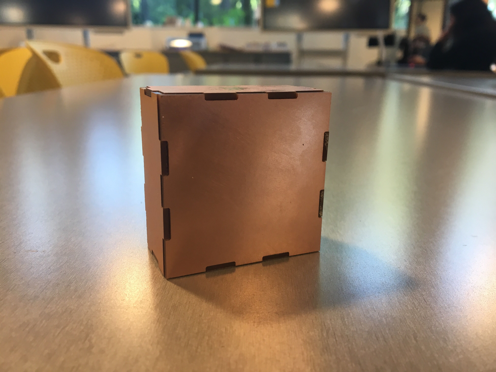
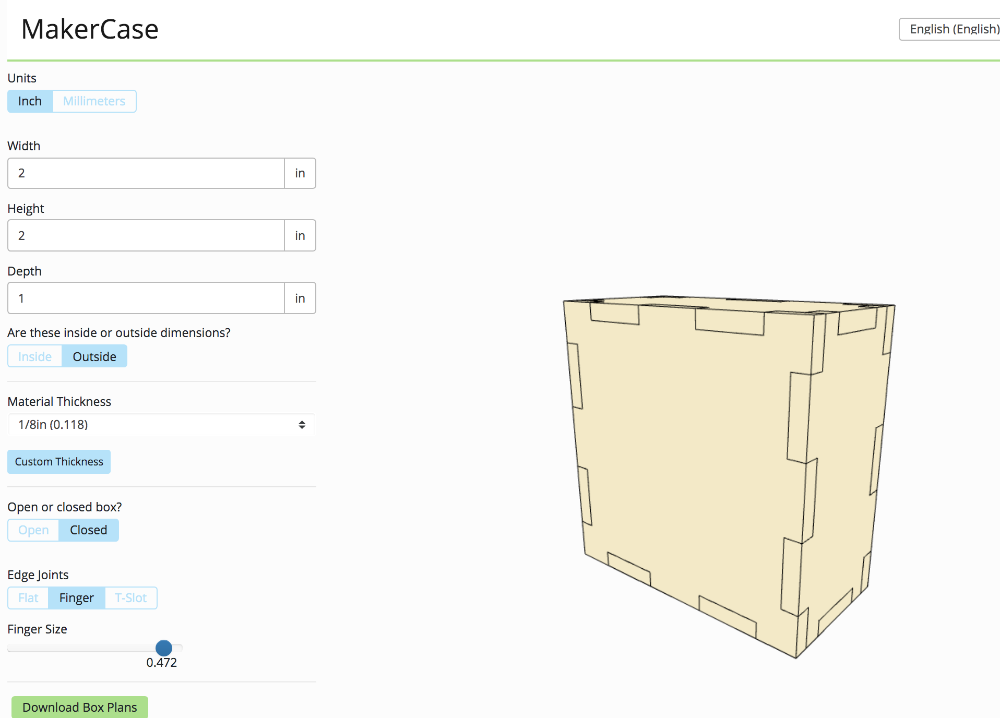
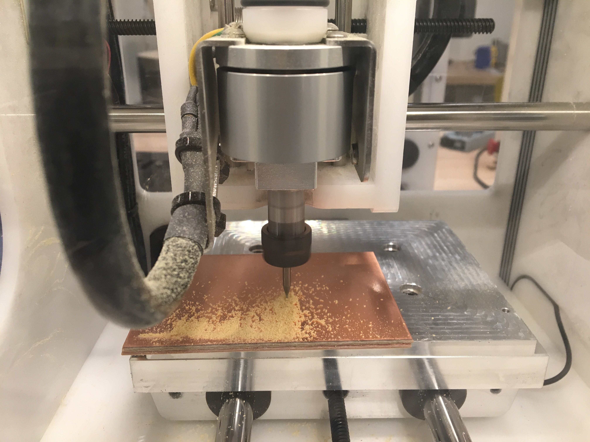

Assignment 5: Subtractive Fabrication and CNC Milling

For this week's project I learned subtractive fabrication and CNC milling using the Othermill. The goal of this project was to design a box with joining methods. I broke away from the screen block theme from previous projects but retrospectively realized that I could have easily milled out a screen block pattern to continue the theme.
Materials and Tools:
4 FR1 boards
High-strength double sided tape
1/32" Flat End Mill
Makercase
KiCad
Bantam Tools software
Step 1. Designing the Box
I created the box design using Makercase and exported my design as a DXF file. I pondered designing the shape in OnShape but wanted to revisit another tool.
Makercase is a straightforward tool that I was introduced to in our first assignment. I'm glad that I got to revisit this nifty tool for the assignment because it did not meet my needs for Assignment 1. I set the box at 2"x2"x1", closed, with finger edge joints (finger size .472"). My intention for designing a small box was so that I could have extra FR1 boards in case I should encounter any milling errors. I did not worry about the material thickness beause I only needed a surface pattern of my 3D model.

Next, I imported my DXF file into KiCad as a "board outline" and exported the outline as a Gerber file and imported the Gerber file into the Bantam Tools software to mill.
Step 2. CNC Milling
On the first run, I set up incorrect placement values for my material. I set the width, height, and thickness to the FR1 board size instead of setting the Z value = zoffset. Uh oh! After configuring the Bantam Tools settings and attaching the 1/32" Flat End Mill, I sticky taped an FR1 board (to be cut) to another board ("the sacrifice") and taped it slightly jutting off the base of the Othermill to be cut. Here's where I made a grave mistake! While I am not sure if I cut *into* the mill (I hope not), the Z setting was set so that both FR1 boards were milled at the same time. I did not know this was happening while the mill was active, but it makes sense in retrospect... there was so much FR1 swarf! The only pro to this mistake was that I ended up with the two (front and back) faces that I needed for the box. Removing the individual box components was a pain because the boards were so tightly sandwiched together.
I returned the following day to mill the side box pieces. This time, I adjusted the settings according to Joshua's presentation deck: X (127mm), Y (101.60mm), Z (1.46mm) and placement at X (12mm), Y (4mm), and Z (1.52mm). To prevent an accumulation of FR1 dust, I attached the bit fan. Voila! Quick fixes! My second attempt with milling was successful. The mill only cut through one FR1 layer and the swarf was cleared out of the way.

Step 3. Assembly
Assembly was a snap! (Literally and figuratively.) I attached the faces of the milled FR1 boards together to make this very cute, very shiny little box. Perhaps I will use this box for storing tiny things.
**Download the DXF files here if you'd like to create your own tiny coppery box!
Collaborators:
Lucas Sexton - review of OnShape
Jami Odell - Helped with settings for Bantam Tools
Joshua Vasquez - for the perfect Othermill settings!